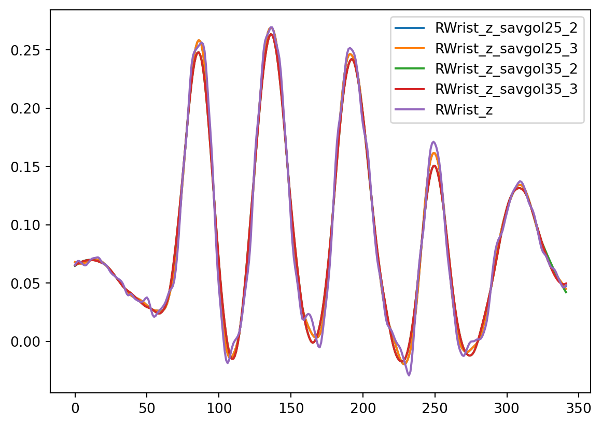
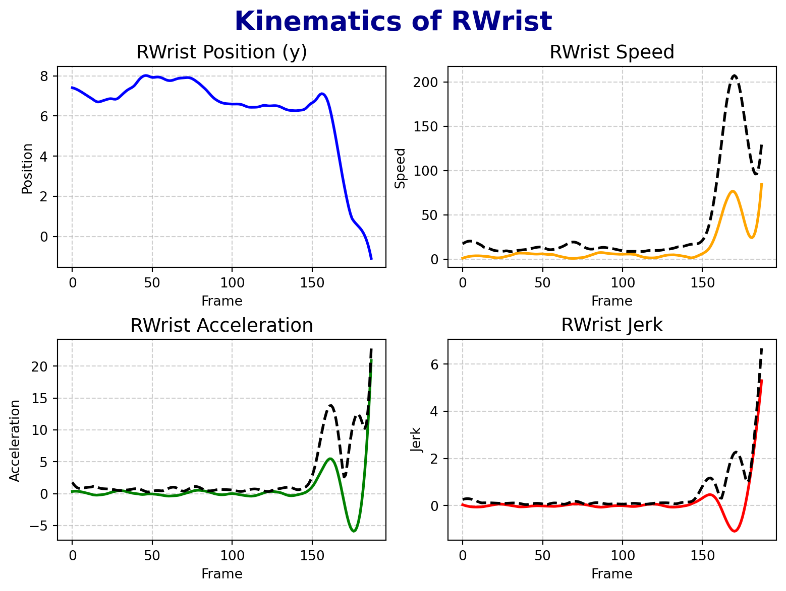
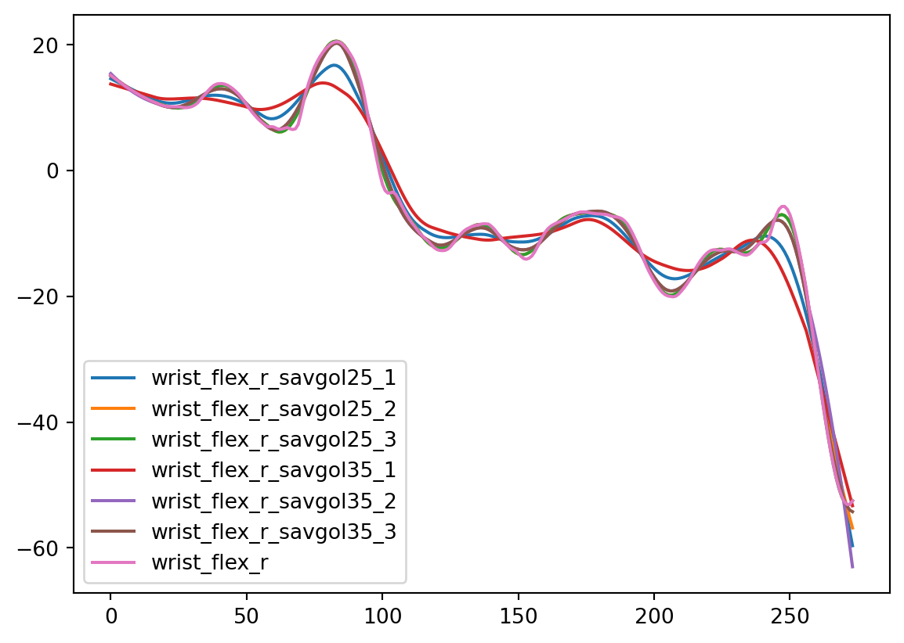
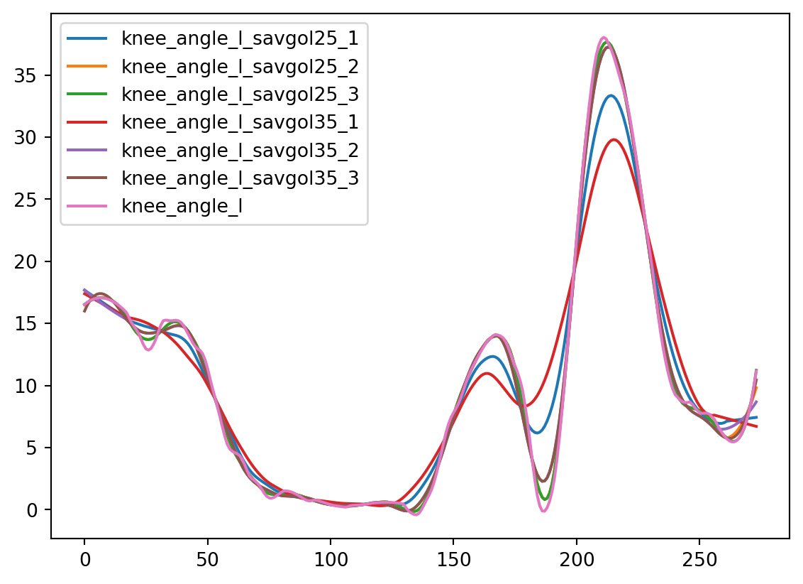
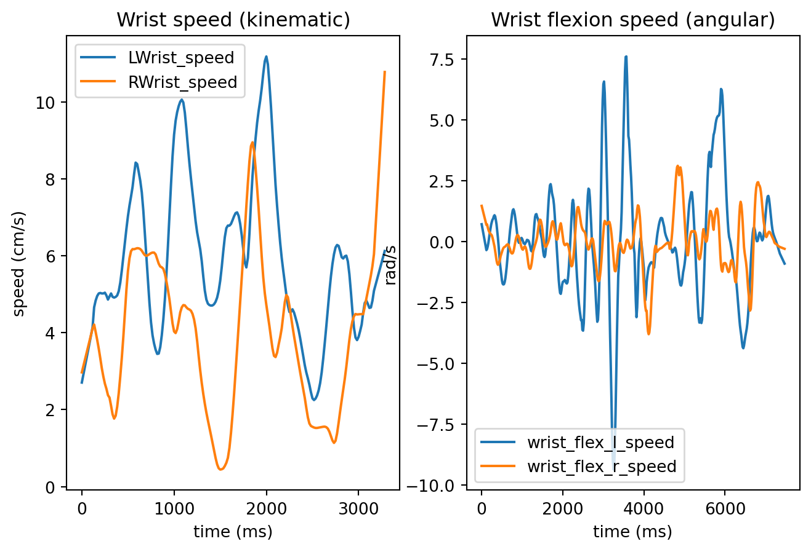
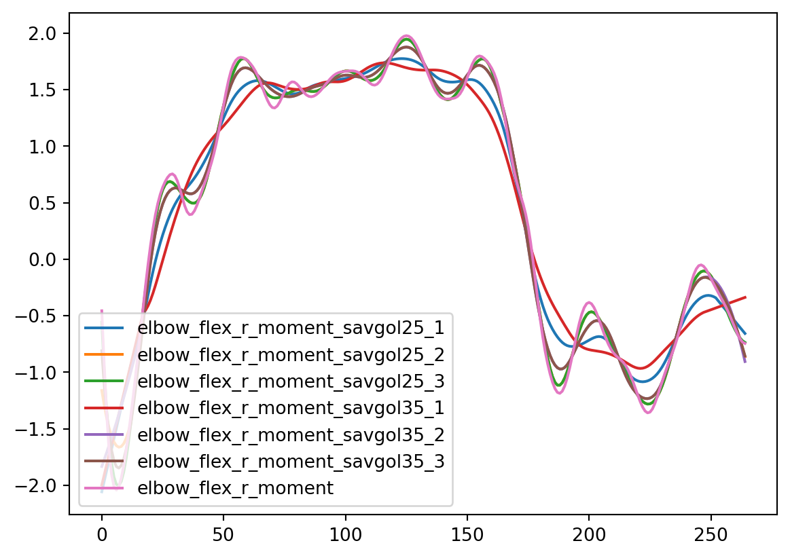
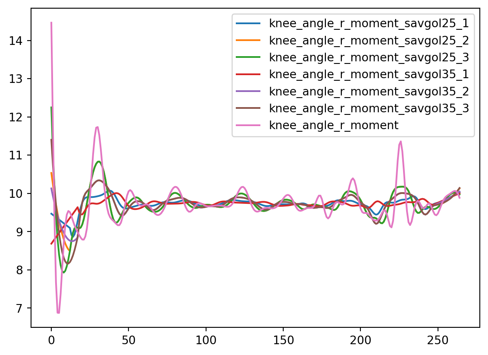

In the previous notebook, we have ran pose estimation on the trial videos (OpenPose), and triangulated the coordinates to get 3D coordinates for each trial (Pose2sim). Furthermore, we have performed inverse kinematics and dynamics to extract joint angles and moments (OpenSim).
In this script, we will clean the data, and extract further information (such as speed, acceleration, etc.).
Code to load packages and prepare the environment
# packagesimport osimport globimport numpy as npimport pandas as pdimport matplotlib.pyplot as pltimport scipyimport randomcurfolder = os.getcwd()# files to work withMTfolder = curfolder +'\\..\\02_MotionTracking_processing\\projectdata\\'## FLAGGED CHANGEBBfolder = curfolder +'\\..\\01_XDF_processing\\data\\Data_processed\\Data_trials\\'# folders to save the processed dataMTfolder_processed = curfolder +'\\TS_motiontracking\\'
Motion processing - kinematics
Here we use the keypoint coordinates estimated via OpenPose ((ADDREF?)) and triangulated via Pose2Sim ((ADDREF?)). While Pose2sim does provie in-built filter, it is not particularly strong and the data can be still noisy.
To decide on the smoothing strength, we can use a custom function check_smooth_strength to check the effect of different smoothing strengths on the data.
Code to prepare files to process
MTtotrack = glob.glob(MTfolder +'*/P*/*', recursive=True)# get rid of all the folders that are not the ones we want to track, like .sto files## FLAG! why not do glob.glob(MTfolder + '*/P*/*butterworth*.csv', recursive=True)MTtotrack = [x for x in MTtotrack if'sto'notin x]MTtotrack = [x for x in MTtotrack if'txt'notin x]MTtotrack = [x for x in MTtotrack if'xml'notin x]MTtotrack = [x for x in MTtotrack if'opensim'notin x]MTtotrack = [x for x in MTtotrack if'Results'notin x]MTtotrack = [x for x in MTtotrack if'toml'notin x]MTfiles_all = []for folder in MTtotrack:# last element is trialid trialid = folder.split('\\')[-1]# get all csv files in the folder csvfiles = glob.glob(folder +'\\**\\*.csv', recursive=True)# keep only the ones that have butterworth in the name - those are filtered with native Pose2sim function csvfiles = [x for x in csvfiles if'butterworth'in x] butterfile = csvfiles[0]# append to list with trialid MTfiles_all.append([trialid, butterfile])
# function to check different smoothing windows and ordersdef check_smooth_strength(df, windows, orders, keytoplot):# prepare new df df_smooth = pd.DataFrame()for win in windows:forordin orders: df_smooth[keytoplot +'_savgol'+str(win) +'_'+str(ord)] = scipy.signal.savgol_filter(df[keytoplot], win, ord)# make R_Hand_x from df_sample a list keytoplot_unsmoothed = df[keytoplot].tolist()# load these values into df_smooth as a new column df_smooth[keytoplot] = keytoplot_unsmoothed# plot keytoplot in all strngths colstoplot = [x for x in df_smooth.columns if keytoplot in x] plt.figure()for col in colstoplot: plt.plot(df_smooth[col], label=col) plt.legend() plt.show()
Here we can see a timeseries of vertical dimension of the left knee (note that pose2sim gave us y and z dimensions flipped, we will deal with this in a second). Each color represents the timeseries in different smoothed version, pink one is the raw signal (which is smoothed only with the Butterworth 10Hz cut-off filter). The first number in the legend corresponds to window length and the second number to polynomial order.
Here we can see the same thing for wrist.

Legs seem to be more noisy than arms. One reason could be that legs are more commonly covered by clothes, which can make the pose estimation more prone to errors. Also, legs often stay without movement, making them more sensitive to noise.
For that reason, we opt for different smoothing strengths for leg-related keypoints than for upper body.
For lower body positional data, we will use 2nd polynomial Savitzky-Golay filter with window of 816 ms.
For upper body positional data, 3rd order Savitzky-Golay filter with window of 400 ms seems to be a good choice. We will use it both for raw coordinates as well as for the derivatives.
Further, we obtain the first, second and third derivative of the timeseries, namely speed, acceleration, and jerk. For derivatives, we will use 3rd order Savitzky-Golay filter with window of 400 ms for both.
Lastly, to be able to work with timeseries that represent bigger segment of body than a single joint, we aggregate the kinematic derivatives for each body group (i.e., head, upperbody, arms, lowerbody) by computing euclidian sum over every derivative belonging to the group. This gives us, for instance, a measure for arm speed that represents a sum of speeds of all keypoints associated with the arm (i.e., wrist, elbow, shoulder, index)
Code with functions for processing kinematic data
# function to get euclidian sum of associated keypointsdef aggregate_keypoints(df, measurement, finalcolname, use):if use =='kinematics':# group keypoints that belong together lowerbodycols = ['RHip', 'LHip'] legcols = ['RKnee', 'RAnkle', 'LAnkle', 'LKnee', 'RHeel', 'LHeel'] headcols = ['Head', 'Neck', 'Nose'] armcols = ['RShoulder', 'RElbow', 'RWrist', 'LShoulder', 'LElbow', 'LWrist', 'RIndex', 'LIndex'] groups = [lowerbodycols, legcols, headcols, armcols]elif use =='angles': pelviscols = ['pelvis'] spinecols = ['L5_S1', 'L4_L5', 'L3_L4', 'L2_L3', 'L1_L2', 'L1_T12'] lowerbodycols = ['pelvis', 'hip'] legcols = ['knee', 'ankle', 'subtalar'] headcols = ['neck'] armcols = ['arm', 'elbow', 'wrist', 'pro_sup'] groups = [lowerbodycols, legcols, headcols, armcols, pelviscols, spinecols]# make subdf only with speed subdf = df[[x for x in df.columns if measurement in x]]# loop through each joint groupfor group in groups:# get cols cols = [x for x in subdf.columns ifany(y in x for y in group)] subdf_temp = subdf[cols]for index, row in subdf_temp.iterrows():# get all values of that row values = row.values# calculate euclidian sum euclidian_sum = np.sqrt(np.sum(np.square(values))) ## FLAGGED: possibly normalize# get a name for new colif group == lowerbodycols: colname ='lowerbody'elif group == legcols: colname ='leg'elif group == headcols: colname ='head'elif group == armcols: colname ='arm'elif group == pelviscols: colname ='pelvis'elif group == spinecols: colname ='spine' df.loc[index, colname + finalcolname] = euclidian_sumreturn df# get kinematic derivativesdef get_derivatives(df, sr, upperbodycols, lowerbodycols, use): mtcols = df.columnsif use =='kinematics':# get rid of cols that are not x, y or z mtcols = [x for x in mtcols if'_x'in x or'_y'in x or'_z'in x]# prepare cols for speed cols = [x.split('_')[0] for x in mtcols] colsforspeed =list(set(cols))# for each unique colname (cols), calculate speed for col in colsforspeed:# get x and y columns x = df[col +'_x'] y = df[col +'_y'] z = df[col +'_z'] # note that y and z are flipped# calculate speed speed = np.insert(np.sqrt(np.diff(x)**2+ np.diff(y)**2+ np.diff(z)**2),0,0)# multiply the values by sr, because now we have values in m/(s/sr) speed = speed*sr# smooth speed = scipy.signal.savgol_filter(speed, 25, 3)# if the col contains wrist, we will alco calculate the vertical velocity (z dimension)if'Wrist'in col: verticvel = np.insert(np.diff(z), 0, 0) verticvel = verticvel*sr verticvel = scipy.signal.savgol_filter(verticvel, 25, 3)# derive acceleration acceleration = np.insert(np.diff(speed), 0, 0) acceleration = scipy.signal.savgol_filter(acceleration, 25, 3)# derive jerk jerk = np.insert(np.diff(acceleration), 0, 0) jerk = scipy.signal.savgol_filter(jerk, 25, 3)# new_data new_data = pd.DataFrame({col +'_speed': speed, col +'_acc': acceleration, col +'_jerk': jerk}) df = pd.concat([df, new_data], axis=1)elif use =='angles':# get rid of cols that are not angles (so skip time) mtcols = mtcols[1:]# derive speedfor col in mtcols: speed = np.insert(np.diff(df[col]), 0, 0) speed = speed*sr speed = scipy.signal.savgol_filter(speed, 35, 1)# derive acceleration acceleration = np.insert(np.diff(speed), 0, 0) acceleration = scipy.signal.savgol_filter(acceleration, 35, 1)# derive jerk jerk = np.insert(np.diff(acceleration), 0, 0) jerk = scipy.signal.savgol_filter(jerk, 35, 1)# new_data new_data = pd.DataFrame({col +'_speed': speed, col +'_acc': acceleration, col +'_jerk': jerk}) df = pd.concat([df, new_data], axis=1)return df
# upper body colsupperbodycols = ['Head', 'Neck', 'RShoulder', 'RElbow', 'RWrist', 'LShoulder', 'LElbow', 'LWrist', 'Nose', 'RIndex', 'LIndex']# lower body colslowerbodycols = ['RHip', 'RKnee', 'RAnkle', 'RHeel', 'LHip', 'LKnee', 'LAnkle', 'LHeel']for folder in MTtotrack:# last element is trialid trialid = folder.split('\\')[-1]print('working on:'+ trialid)# get all csv files in the folder csvfiles = glob.glob(folder +'/**/*.csv', recursive=True)# keep only the ones that have butterworth in the name csvfiles = [x for x in csvfiles if'butterworth'in x] butterfile = csvfiles[0]# load it mt = pd.read_csv(butterfile)# the mt is missing 0 ms timepoint, so we need to create a row that copies the first row of mt and time = 0 padrow = mt.iloc[0].copy() padrow['Time'] =0# concatenate it to the beginning of mt mt = pd.concat([pd.DataFrame(padrow).T, mt], ignore_index=True)# keep only cols of interest colstokeep = ["Time", "RHip", "RKnee", "RAnkle", "RHeel", "LHip", "LKnee", "LAnkle", "LHeel", "Neck", "Head", "Nose", "RShoulder", "RElbow", "RWrist", "RIndex", "LShoulder", "LElbow", "LWrist","LIndex",] mt = mt[[col for col in mt.columns ifany(x in col for x in colstokeep)]]# flip y and z dimension as they are reversed from OpenPose/Pose2sim# if col has _y in it, replace it by _temp mt.columns = [x.replace('_y', '_temp') for x in mt.columns]# replace _z by _y mt.columns = [x.replace('_z', '_y') for x in mt.columns]# replace _temp by _z mt.columns = [x.replace('_temp', '_z') for x in mt.columns]####### SMOOTHING ####### smooth all columns except time with savgol mtcols = mt.columns colstosmooth = mtcols[:-1] mt_smooth = pd.DataFrame()for col in colstosmooth: colname = col.split('_')[0] # to get rid of _x, _y, _zif colname in upperbodycols: mt_smooth[col] = scipy.signal.savgol_filter(mt[col], 25, 3)elif colname in lowerbodycols: mt_smooth[col] = scipy.signal.savgol_filter(mt[col], 51, 2)# And put them all to cms mt_smooth = mt_smooth*100if'LHip_x'notin mt_smooth.columns:print('LHip missing in already noq '+ trialid)break# add back time column mt_smooth['Time'] = mt['Time']# get sampling rate sr =1/np.mean(np.diff(mt['Time']))###### DERIVATIVES ####### get kinematic derivatives mt_smooth = get_derivatives(mt_smooth, sr, upperbodycols, lowerbodycols, 'kinematics')###### AGGREGATING ####### getting aggreagated sums for groups of cols mt_smooth = aggregate_keypoints(mt_smooth, 'speed', '_speedKin_sum', 'kinematics') mt_smooth = aggregate_keypoints(mt_smooth, 'acc', '_accKin_sum', 'kinematics') mt_smooth = aggregate_keypoints(mt_smooth, 'jerk', '_jerkKin_sum', 'kinematics')# add trialid mt_smooth['TrialID'] = trialid# convert time to ms mt_smooth['Time'] = mt_smooth['Time']*1000# write to csv mt_smooth.to_csv(MTfolder_processed +'/mt_'+ trialid +'.csv', index=False)
Here is an example of the file
RHip_x
RHip_z
RHip_y
RKnee_x
RKnee_z
RKnee_y
RAnkle_x
RAnkle_z
RAnkle_y
RHeel_x
...
arm_speedKin_sum
lowerbody_accKin_sum
leg_accKin_sum
head_accKin_sum
arm_accKin_sum
lowerbody_jerkKin_sum
leg_jerkKin_sum
head_jerkKin_sum
arm_jerkKin_sum
TrialID
0
11.263940
28.425013
0.964926
13.008944
27.538243
-42.780499
14.966274
21.771944
-78.646067
16.891051
...
18.047845
0.695030
0.822032
0.653588
2.018662
0.040508
0.061993
0.392078
0.172546
0_1_1_p0
1
11.313856
28.319805
1.025563
13.042923
27.444688
-42.702989
14.967249
21.771937
-78.646077
16.892809
...
16.257866
0.594654
0.686516
0.667902
1.831504
0.061828
0.085478
0.351773
0.193528
0_1_1_p0
2
11.362161
28.217503
1.084573
13.075918
27.354382
-42.628320
14.968184
21.771933
-78.646099
16.894395
...
15.080648
0.495527
0.554030
0.977647
1.650492
0.077936
0.103968
0.307074
0.235176
0_1_1_p0
3
11.408854
28.118106
1.141955
13.107930
27.267326
-42.556490
14.969079
21.771932
-78.646134
16.895809
...
14.348993
0.398298
0.425320
1.274512
1.473776
0.089263
0.117080
0.259198
0.272959
0_1_1_p0
4
11.453935
28.021615
1.197709
13.138958
27.183520
-42.487500
14.969933
21.771935
-78.646182
16.897051
...
13.905328
0.303626
0.301318
1.494348
1.303065
0.096240
0.125045
0.209738
0.299279
0_1_1_p0
5
11.497404
27.928029
1.251836
13.169003
27.102963
-42.421349
14.970747
21.771942
-78.646242
16.898120
...
13.627189
0.212208
0.183569
1.629307
1.143845
0.099301
0.128261
0.161103
0.312511
0_1_1_p0
6
11.539261
27.837349
1.304334
13.198064
27.025655
-42.358038
14.971521
21.771952
-78.646314
16.899018
...
13.436787
0.124890
0.078148
1.683353
1.005706
0.098876
0.127185
0.117871
0.313036
0_1_1_p0
7
11.579507
27.749574
1.355205
13.226142
26.951597
-42.297568
14.972255
21.771966
-78.646399
16.899743
...
13.297600
0.044046
0.063189
1.663975
0.901934
0.095398
0.122300
0.090291
0.302015
0_1_1_p0
8
11.618140
27.664705
1.404448
13.253236
26.880788
-42.239936
14.972948
21.771983
-78.646496
16.900296
...
13.204838
0.042383
0.151216
1.580108
0.846238
0.089299
0.114103
0.092624
0.280989
0_1_1_p0
9
11.655162
27.582741
1.452063
13.279346
26.813229
-42.185145
14.973601
21.772004
-78.646606
16.900676
...
13.174239
0.112448
0.240561
1.441587
0.845192
0.081014
0.103103
0.120549
0.251744
0_1_1_p0
10
11.690572
27.503683
1.498050
13.304473
26.748919
-42.133193
14.974214
21.772028
-78.646729
16.900885
...
13.230863
0.178251
0.322318
1.259214
0.891947
0.070976
0.089820
0.157852
0.216329
0_1_1_p0
11
11.724370
27.427530
1.542410
13.328617
26.687859
-42.084081
14.974787
21.772056
-78.646863
16.900921
...
13.398579
0.237402
0.394577
1.045517
0.969271
0.059620
0.074792
0.195586
0.177234
0_1_1_p0
12
11.756557
27.354283
1.585141
13.351776
26.630048
-42.037809
14.975319
21.772087
-78.647011
16.900785
...
13.691277
0.289053
0.456165
0.817132
1.057801
0.047388
0.058599
0.229718
0.137942
0_1_1_p0
13
11.787131
27.283941
1.626245
13.373953
26.575487
-41.994377
14.975811
21.772122
-78.647170
16.900477
...
13.129105
0.375223
0.554873
0.606136
1.232153
0.032401
0.038436
0.275922
0.111346
0_1_1_p0
14
11.816094
27.216505
1.665721
13.395145
26.524175
-41.953784
14.976263
21.772161
-78.647343
16.899997
...
14.082149
0.389366
0.566769
0.433529
1.222559
0.021882
0.023793
0.275046
0.095998
0_1_1_p0
15 rows × 128 columns
Let’s check one file to see how the data looks like by plotting RWrist and its kinematics, and also the euclidian sum for the whole arm along with it (as dashed black line)
Note that aggregates will always be directionless (i.e., in positive numbers) as they are squared when computed.

Motion processing - inverse kinematics
In the previous notebook, we have extracted joint angles using OpenSim ((ADDREF?)). Now again, we clean the data, smooth them, and extract further information before saving it into csv file per trial
We can once again check what would be the proper filter
Code to prepare environment
# get all mot files in the foldermot_files = glob.glob(MTfolder +'*/P*/*/*.mot', recursive=True)keypoints = ['wrist', 'pro_sup', 'elbow', 'arm', 'neck', 'subtalar', 'ankle', 'knee', 'hip', 'pelvis', 'L5_S1', 'L4_L5', 'L3_L4', 'L2_L3', 'L1_L2', 'L1_T12']

And for legs

We will apply a bit stronger filter of 1st order with span of 560 ms because the data are more noisy than the kinematics.
# get all mot files in the foldermot_files = glob.glob(MTfolder +'*/P*/*/*.mot', recursive=True)keypoints = ['wrist', 'pro_sup', 'elbow', 'arm', 'neck', 'subtalar', 'ankle', 'knee', 'hip', 'pelvis', 'L5_S1', 'L4_L5', 'L3_L4', 'L2_L3', 'L1_L2', 'L1_T12']for mot in mot_files:# get trialid trialid = mot.split('\\')[-1].split('.')[0]print('working on '+ trialid)# get rid of the first element before _ trialid ='_'.join(trialid.split('_')[1:])# load it mot_df = pd.read_csv(mot, sep='\t', skiprows=10)# pad 0 ms row padrow = mot_df.iloc[0].copy() padrow['time'] =0# concatenate it to the beginning of mot_df mot_df = pd.concat([pd.DataFrame(padrow).T, mot_df], ignore_index=True)# get the sr sr =1/np.mean(np.diff(mot_df['time']))##### SMOOTHING ####### smooth all columns except the firts time (time) and last (trialid) colstosmooth = [x for x in mot_df.columns if'time'notin x]# smoothfor col in colstosmooth: mot_df[col] = scipy.signal.savgol_filter(mot_df[col], 35, 1)# convert to radians mot_df[col] = np.deg2rad(mot_df[col])# keep only columns you might use coi = [x for x in mot_df.columns ifany(y in x for y in keypoints) or'time'in x or'TrialID'in x] mot_df2 = mot_df[coi]##### DERIVATIVES ####### get derivatives mot_df2 = get_derivatives(mot_df2, sr, [], [], 'angles')#### AGGREGATING ###### aggregate data mot_df2 = aggregate_keypoints(mot_df2, 'speed', '_angSpeed_sum', 'angles') mot_df2 = aggregate_keypoints(mot_df2, 'acc', '_angAcc_sum', 'angles') mot_df2 = aggregate_keypoints(mot_df2, 'jerk', '_angJerk_sum', 'angles')# add time and trialid mot_df2['time'] = mot_df['time']# convert time to ms mot_df2['time'] = mot_df2['time']*1000 mot_df2['TrialID'] = trialid# write to csv mot_df2.to_csv(MTfolder_processed +'/ik_'+ trialid +'.csv', index=False)
Here is an example file
time
pelvis_tilt
pelvis_list
pelvis_rotation
pelvis_tx
pelvis_ty
pelvis_tz
hip_flexion_r
hip_adduction_r
hip_rotation_r
...
arm_angAcc_sum
pelvis_angAcc_sum
spine_angAcc_sum
lowerbody_angJerk_sum
leg_angJerk_sum
head_angJerk_sum
arm_angJerk_sum
pelvis_angJerk_sum
spine_angJerk_sum
TrialID
0
0.000
-0.026537
1.467879
-1.566422
0.003920
0.002349
0.002289
0.123867
-0.052114
-0.265734
...
0.117133
0.050580
0.001798
0.001892
0.000222
0.000261
0.004608
0.001866
0.000112
0_1_27_p1
1
16.667
-0.019790
1.467807
-1.574562
0.003919
0.002350
0.002289
0.124248
-0.052674
-0.263734
...
0.116331
0.051625
0.001879
0.001787
0.000204
0.000260
0.004432
0.001760
0.000108
0_1_27_p1
2
33.333
-0.013043
1.467735
-1.582701
0.003918
0.002351
0.002290
0.124628
-0.053235
-0.261733
...
0.115654
0.052670
0.001960
0.001683
0.000188
0.000258
0.004268
0.001654
0.000103
0_1_27_p1
3
50.000
-0.006296
1.467663
-1.590841
0.003917
0.002352
0.002290
0.125008
-0.053795
-0.259733
...
0.115105
0.053715
0.002042
0.001580
0.000175
0.000257
0.004117
0.001548
0.000099
0_1_27_p1
4
66.667
0.000452
1.467591
-1.598981
0.003915
0.002352
0.002291
0.125388
-0.054355
-0.257732
...
0.114685
0.054761
0.002123
0.001477
0.000166
0.000256
0.003980
0.001442
0.000094
0_1_27_p1
5
83.333
0.007199
1.467519
-1.607121
0.003914
0.002353
0.002291
0.125768
-0.054916
-0.255732
...
0.114395
0.055807
0.002205
0.001375
0.000160
0.000256
0.003859
0.001336
0.000090
0_1_27_p1
6
100.000
0.013946
1.467447
-1.615260
0.003913
0.002354
0.002292
0.126148
-0.055476
-0.253731
...
0.114237
0.056853
0.002286
0.001274
0.000160
0.000256
0.003754
0.001231
0.000086
0_1_27_p1
7
116.667
0.020693
1.467376
-1.623400
0.003912
0.002355
0.002292
0.126528
-0.056037
-0.251731
...
0.114211
0.057900
0.002368
0.001174
0.000163
0.000256
0.003669
0.001125
0.000081
0_1_27_p1
8
133.333
0.027440
1.467304
-1.631540
0.003911
0.002356
0.002293
0.126909
-0.056597
-0.249730
...
0.114317
0.058947
0.002450
0.001075
0.000171
0.000256
0.003603
0.001019
0.000077
0_1_27_p1
9
150.000
0.034187
1.467232
-1.639679
0.003910
0.002356
0.002294
0.127289
-0.057157
-0.247730
...
0.114555
0.059994
0.002531
0.000979
0.000183
0.000257
0.003559
0.000914
0.000073
0_1_27_p1
10
166.667
0.040934
1.467160
-1.647819
0.003908
0.002357
0.002294
0.127669
-0.057718
-0.245730
...
0.114924
0.061041
0.002613
0.000885
0.000198
0.000257
0.003536
0.000808
0.000069
0_1_27_p1
11
183.333
0.047681
1.467088
-1.655959
0.003907
0.002358
0.002295
0.128049
-0.058278
-0.243729
...
0.115422
0.062089
0.002695
0.000794
0.000215
0.000259
0.003536
0.000703
0.000065
0_1_27_p1
12
200.000
0.054428
1.467016
-1.664098
0.003906
0.002359
0.002295
0.128429
-0.058838
-0.241729
...
0.116049
0.063137
0.002777
0.000709
0.000235
0.000260
0.003558
0.000599
0.000061
0_1_27_p1
13
216.667
0.061176
1.466944
-1.672238
0.003905
0.002360
0.002296
0.128809
-0.059399
-0.239728
...
0.116802
0.064185
0.002859
0.000630
0.000255
0.000262
0.003602
0.000494
0.000058
0_1_27_p1
14
233.333
0.067923
1.466872
-1.680378
0.003904
0.002360
0.002296
0.129189
-0.059959
-0.237728
...
0.117678
0.065233
0.002940
0.000561
0.000277
0.000264
0.003667
0.000391
0.000054
0_1_27_p1
15 rows × 240 columns
Here we can see the joint angle speed next to kinematic speed.

Motion processing - inverse dynamics
Now we do exactly the same also for inverse dynamics data (joint torques).
Code to prepare environment
# in MTfolders, find all sto filessto_files = glob.glob(MTfolder +'*/P*/*/*.sto', recursive=True)sto_files = [x for x in sto_files if'ID'in x]
Let’s once again check the different smoothing strengths

And for legs

We will again reuse 1st order Savitzky-Golay filter with window of 560 ms for the moments and their first derivate (moment change).
# in MTfolders, find all sto filessto_files = glob.glob(MTfolder +'*/P*/*/*.sto', recursive=True)sto_files = [x for x in sto_files if'ID'in x]for sto in sto_files:# from the filename, get the trialid trialid = sto.split('\\')[-1].split('.')[0] trialid ='_'.join(trialid.split('_')[:-1]) trialid ='_'.join(trialid.split('_')[1:])print('working on '+ trialid)# load it id_df = pd.read_csv(sto, sep='\t', skiprows=6)# pad 0 ms row padrow = id_df.iloc[0].copy() padrow['time'] =0# concatenate it to the beginning of id_df id_df = pd.concat([pd.DataFrame(padrow).T, id_df], ignore_index=True)##### SMOOTHING ###### smooth all columns except the firts time (time) and last (trialid) colstosmooth = [x for x in id_df.columns if'time'notin x] colstosmooth = [x for x in colstosmooth if'TrialID'notin x]# smoothfor col in colstosmooth: id_df[col] = scipy.signal.savgol_filter(id_df[col], 35, 1)##### AGGREGATING ###### get aggregated euclidian sum for each joint group id_df = aggregate_keypoints(id_df, 'moment', '_moment_sum', 'angles')#### TORQUE CHANGE ###### for each moment col, we will also calculate the change torquestodiff = [x for x in id_df.columns if'moment'in x]for col in torquestodiff: torquechange = np.abs(np.insert(np.diff(id_df[col]), 0, 0)) torquechange_smoothed = scipy.signal.savgol_filter(torquechange, 35, 1)# new data new_data = pd.DataFrame({col +'_change': torquechange_smoothed}) id_df = pd.concat([id_df, new_data], axis=1)# convert time to ms id_df['time'] = id_df['time']*1000# add trialid id_df['TrialID'] = trialid# write to csv id_df.to_csv(MTfolder_processed +'/id_'+ trialid +'.csv', index=False)
Here is an example file
time
pelvis_tilt_moment
pelvis_list_moment
pelvis_rotation_moment
pelvis_tx_force
pelvis_ty_force
pelvis_tz_force
hip_flexion_r_moment
hip_adduction_r_moment
hip_rotation_r_moment
...
wrist_dev_r_moment_change
wrist_flex_l_moment_change
wrist_dev_l_moment_change
lowerbody_moment_sum_change
leg_moment_sum_change
head_moment_sum_change
arm_moment_sum_change
pelvis_moment_sum_change
spine_moment_sum_change
TrialID
0
0.000
2.565978
57.597106
2.477206
10.465236
611.926959
3.188816
-43.935683
8.194936
0.286896
...
-0.000264
0.001885
-0.000808
0.132150
0.000367
0.016220
-0.005874
0.133209
-0.017012
0_2_94_p1
1
16.579
2.578330
57.444397
2.562650
10.104391
612.282049
3.401577
-43.839788
7.871030
0.330321
...
-0.000167
0.001900
-0.000558
0.133959
0.001104
0.017588
-0.003406
0.134401
-0.011277
0_2_94_p1
2
33.245
2.590683
57.291688
2.648094
9.743545
612.637140
3.614338
-43.743893
7.547124
0.373745
...
-0.000071
0.001914
-0.000309
0.135767
0.001841
0.018956
-0.000938
0.135593
-0.005542
0_2_94_p1
3
49.911
2.603036
57.138979
2.733538
9.382700
612.992231
3.827100
-43.647997
7.223218
0.417170
...
0.000026
0.001929
-0.000059
0.137576
0.002578
0.020323
0.001530
0.136785
0.000193
0_2_94_p1
4
66.577
2.615388
56.986270
2.818981
9.021855
613.347321
4.039861
-43.552102
6.899312
0.460595
...
0.000122
0.001943
0.000190
0.139384
0.003315
0.021691
0.003999
0.137977
0.005928
0_2_94_p1
5
83.243
2.627741
56.833561
2.904425
8.661009
613.702412
4.252622
-43.456206
6.575406
0.504019
...
0.000219
0.001958
0.000440
0.141193
0.004051
0.023058
0.006467
0.139169
0.011663
0_2_94_p1
6
99.909
2.640093
56.680852
2.989869
8.300164
614.057503
4.465384
-43.360311
6.251500
0.547444
...
0.000315
0.001972
0.000689
0.143002
0.004788
0.024426
0.008935
0.140361
0.017398
0_2_94_p1
7
116.575
2.652446
56.528143
3.075313
7.939319
614.412593
4.678145
-43.264416
5.927594
0.590868
...
0.000412
0.001986
0.000939
0.144810
0.005525
0.025794
0.011403
0.141553
0.023133
0_2_94_p1
8
133.241
2.664798
56.375434
3.160757
7.578473
614.767684
4.890906
-43.168520
5.603688
0.634293
...
0.000508
0.002001
0.001188
0.146619
0.006262
0.027161
0.013871
0.142745
0.028868
0_2_94_p1
9
149.907
2.677151
56.222725
3.246201
7.217628
615.122775
5.103668
-43.072625
5.279782
0.677717
...
0.000605
0.002015
0.001438
0.148427
0.006999
0.028529
0.016339
0.143937
0.034603
0_2_94_p1
10
166.573
2.689504
56.070016
3.331645
6.856782
615.477865
5.316429
-42.976729
4.955876
0.721142
...
0.000702
0.002030
0.001687
0.150236
0.007735
0.029897
0.018807
0.145129
0.040338
0_2_94_p1
11
183.239
2.701856
55.917307
3.417089
6.495937
615.832956
5.529190
-42.880834
4.631970
0.764566
...
0.000798
0.002044
0.001937
0.152044
0.008472
0.031264
0.021275
0.146321
0.046073
0_2_94_p1
12
199.905
2.714209
55.764598
3.502533
6.135092
616.188047
5.741952
-42.784939
4.308064
0.807991
...
0.000895
0.002059
0.002186
0.153853
0.009209
0.032632
0.023744
0.147513
0.051808
0_2_94_p1
13
216.571
2.726561
55.611889
3.587977
5.774246
616.543137
5.954713
-42.689043
3.984158
0.851415
...
0.000991
0.002073
0.002436
0.155662
0.009946
0.033999
0.026212
0.148705
0.057543
0_2_94_p1
14
233.237
2.738914
55.459180
3.673421
5.413401
616.898228
6.167474
-42.593148
3.660252
0.894840
...
0.001088
0.002087
0.002685
0.157470
0.010683
0.035367
0.028680
0.149897
0.063278
0_2_94_p1
15 rows × 131 columns
Now we can check by ploting the joint moment change against kinematic acceleration
Lastly, we need to process the balance board data. We apply 5th order Savitzky-Golay filter to windows of 102 ms. To have a measure for postural adjustments, we compute the change in 2D magnitude (L2 norm of the center of pressure x and y) in center of pressure.
BB_files = glob.glob(BBfolder +'*BalanceBoard*.csv', recursive=True)for bb in BB_files:# get trialid trialid = bb.split('\\')[-1].split('.')[0]# get the first, second, fourth, nineth elements trialid ='_'.join(trialid.split('_')[:2] + trialid.split('_')[3:4] + trialid.split('_')[8:9])print('working on '+ trialid)# because we are going to merge on bb, we will store also more information fileinfo = bb.split('\\')[-1].split('.')[0]# if second element is 1, we will store last three elementsif fileinfo.split('_')[1] =='1':# if there is not 'corrected' in the name, we will store last three elementsif'corrected'notin fileinfo: info ='_'.join(fileinfo.split('_')[-3:])else: info ='_'.join(fileinfo.split('_')[-4:])elif fileinfo.split('_')[1] =='2':# otherwise we store last four elements (5 when corrected)if'corrected'notin fileinfo: info ='_'.join(fileinfo.split('_')[-4:])else: info ='_'.join(fileinfo.split('_')[-5:])# Load the balanceboard data df_bb = pd.read_csv(bb)# Rename columns df_bb.columns = ['time_s', 'left_back', 'right_forward', 'right_back', 'left_forward']# Calculate sampling rate bbsamp =1/ np.mean(np.diff(df_bb['time_s'] -min(df_bb['time_s'])))# Apply Savitzky-Golay filter to smooth the datafor col in df_bb.columns[1:]: df_bb[col] = scipy.signal.savgol_filter(df_bb[col], 51, 5) # window of 102 ms# Calculate COPX and COPY COPX = (df_bb['right_forward'] + df_bb['right_back']) - (df_bb['left_forward'] + df_bb['left_back']) COPY = (df_bb['right_forward'] + df_bb['left_forward']) - (df_bb['left_back'] + df_bb['right_back'])# Calculate COPXc and COPYc df_bb['COPXc'] = scipy.signal.savgol_filter(np.insert(np.diff(COPX), 0, 0), 51, 5) df_bb['COPYc'] = scipy.signal.savgol_filter(np.insert(np.diff(COPY), 0, 0), 51, 5)# Calculate COPc df_bb['COPc'] = np.sqrt(df_bb['COPXc']**2+ df_bb['COPYc']**2)# restart the time so that starts from 0 df_bb['time_s'] = df_bb['time_s'] -min(df_bb['time_s'])# convert to ms df_bb['time_s'] = df_bb['time_s']*1000# rename time_s to time df_bb.rename(columns={'time_s': 'time'}, inplace=True)# Add trialid df_bb['TrialID'] = trialid# Add info df_bb['FileInfo'] = info# Write as csv to MTfolder_processed df_bb.to_csv(MTfolder_processed +'/bb_'+ trialid +'.csv', index=False)
Here is an example of a file
time
left_back
right_forward
right_back
left_forward
COPXc
COPYc
COPc
TrialID
FileInfo
0
0.000000
1.120384
0.805309
1.549477
1.349571
0.000223
0.000595
0.000636
0_2_77_p0
p0_vlieg_geluiden_c1
1
2.000053
1.120062
0.805594
1.549227
1.349574
0.000206
0.000473
0.000516
0_2_77_p0
p0_vlieg_geluiden_c1
2
4.000105
1.119767
0.805766
1.548985
1.349509
0.000189
0.000374
0.000419
0_2_77_p0
p0_vlieg_geluiden_c1
3
6.000158
1.119495
0.805845
1.548750
1.349390
0.000173
0.000295
0.000342
0_2_77_p0
p0_vlieg_geluiden_c1
4
8.000211
1.119241
0.805849
1.548522
1.349232
0.000157
0.000236
0.000283
0_2_77_p0
p0_vlieg_geluiden_c1
5
10.000264
1.119000
0.805794
1.548300
1.349045
0.000143
0.000192
0.000240
0_2_77_p0
p0_vlieg_geluiden_c1
6
12.000316
1.118769
0.805696
1.548085
1.348841
0.000130
0.000163
0.000208
0_2_77_p0
p0_vlieg_geluiden_c1
7
14.000369
1.118546
0.805567
1.547875
1.348628
0.000118
0.000145
0.000187
0_2_77_p0
p0_vlieg_geluiden_c1
8
16.000422
1.118326
0.805419
1.547672
1.348415
0.000108
0.000137
0.000175
0_2_77_p0
p0_vlieg_geluiden_c1
9
18.000475
1.118110
0.805261
1.547475
1.348208
0.000100
0.000137
0.000170
0_2_77_p0
p0_vlieg_geluiden_c1
10
20.000527
1.117895
0.805102
1.547284
1.348012
0.000092
0.000144
0.000171
0_2_77_p0
p0_vlieg_geluiden_c1
11
22.000580
1.117681
0.804949
1.547101
1.347833
0.000087
0.000156
0.000179
0_2_77_p0
p0_vlieg_geluiden_c1
12
24.000633
1.117468
0.804809
1.546924
1.347674
0.000082
0.000172
0.000191
0_2_77_p0
p0_vlieg_geluiden_c1
13
26.000685
1.117254
0.804685
1.546754
1.347537
0.000079
0.000190
0.000206
0_2_77_p0
p0_vlieg_geluiden_c1
14
28.000738
1.117042
0.804583
1.546593
1.347424
0.000077
0.000209
0.000223
0_2_77_p0
p0_vlieg_geluiden_c1
Here is an example of a timeseries representing change in center of pressure (COPc)